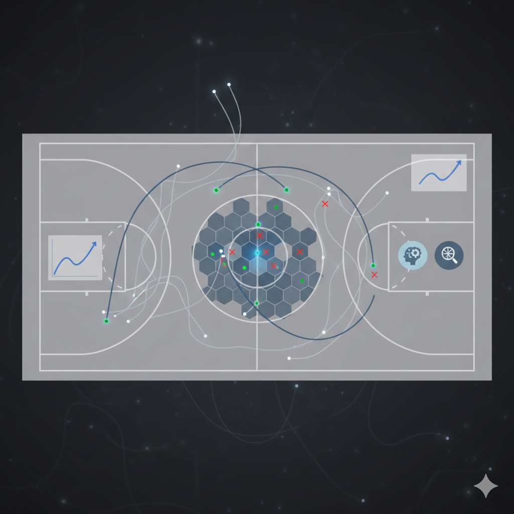
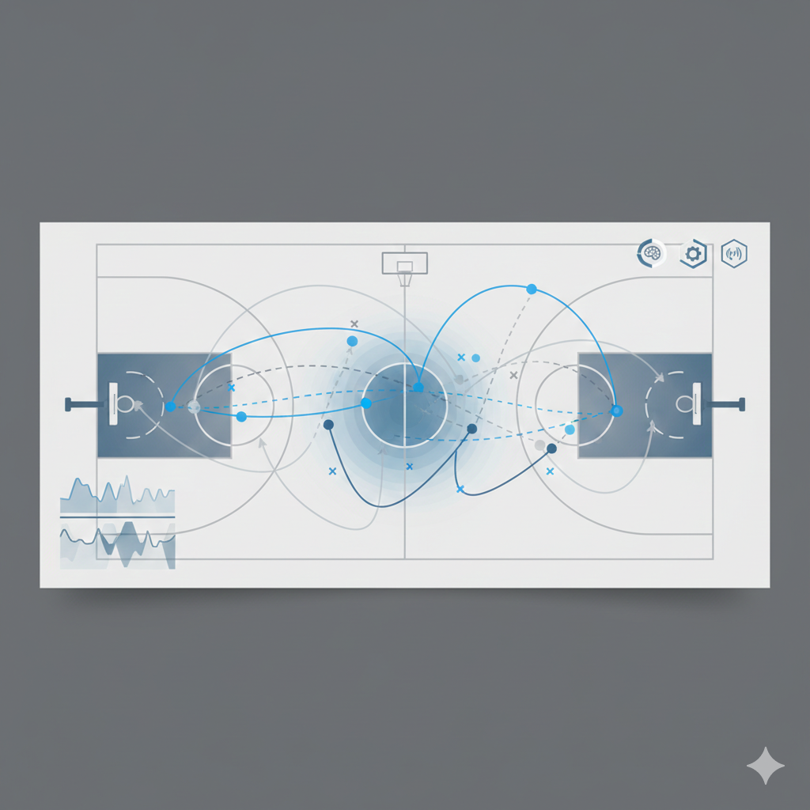

How AI Shot Tracking Is Changing Basketball Training
February 1, 2026

One of the newer trends in basketball training is AI-powered shot tracking. Systems like ShotTracker and sensor-assisted solutions collect data on arc angle, release speed, shot depth, and where shots land on the rim. AI then turns that raw data into patterns and suggestions.

Instead of logging makes and misses by hand, players get instant feedback on each shot and coaches can spot where small mechanical changes will likely improve results. Over time, that means more consistent shooting and better practice choices.
For student-athletes, the real win is efficiency: you get clearer practice goals and less guesswork. AI shot tracking doesn't replace reps — it makes those reps count more.